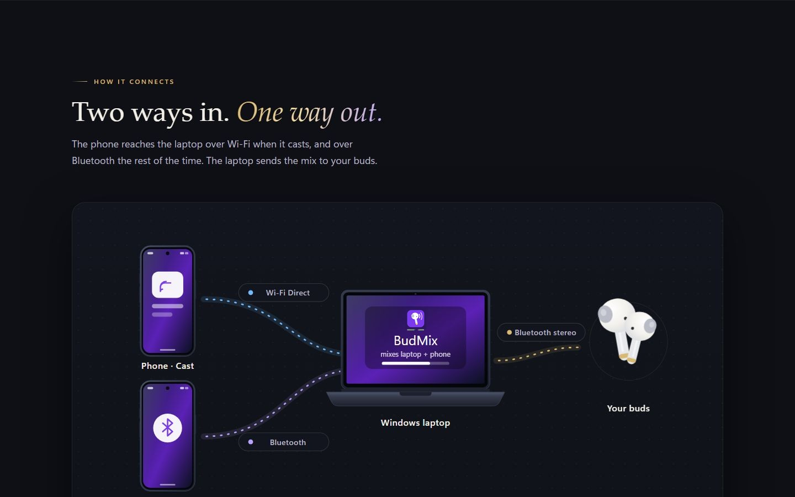

BudMix — one pair of buds for laptop and phone
A Windows 11 app that plays a laptop and a phone in the same Bluetooth earbuds, with nothing to install on the phone.

Overview
Most earbuds hold a single connection. BudMix keeps that connection on the laptop. The phone sends its sound to the laptop, and Windows mixes both so you hear them together.
The app waits in the tray. It is free, open source, and about 1.6 MB. There is no account, and nothing is installed on the phone. Shortcut: Ctrl+Alt+B.
How it works
- [001]
Earbuds
The buds stay paired to the laptop and become the only output. BudMix never opens their microphone, and it reconnects them after a drop, a closed case, or sleep.
- [002]
Wi-Fi Cast
The phone uses its built-in Cast button. Sound travels over a direct Wi-Fi link to the laptop — even with no internet.
- [003]
Bluetooth
When the phone is not casting, the laptop acts as a Bluetooth speaker. Pair once; BudMix opens that link itself.
- [004]
Mix
Laptop apps, Wi-Fi Cast, and Bluetooth each have a slider and a mute. Windows sends one stereo mix out to the buds.
